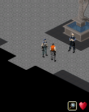

Genesis became a visual reference we kept returning to in other bridges. First, though, we had a raw ARM game stopping at its first missing resource service. The early phone report reached that frontier after 812 instructions.RG01RG02RG03
A borrowed start.
We started from Rush Marine’s preserved runtime. That saved us the execution groundwork, but Genesis used a different startup event and expected its own resource, file and media contracts. We still had to answer those requests correctly.RG06RG04
An “insufficient memory” startup screen came from the file-mode mapping. A resource buffer needed its original archive header. An audio-policy call needed to fill its output, because leaving that buffer untouched made the game disable music. Each mismatch had a convincing symptom somewhere beyond the incorrect service.RG04
Rendering had a similar trap. The original ARM code converted sprites into indexed bitmaps and established their transparency keys. Treating every black pixel as transparent would have discarded real image content. The host needed to honor the key that conversion actually produced.RG04RG05
Jill reaches the phone.

The original 176×220 mansion, retained from desktop original-runtime acceptance. The separate phone outcome is documented in RG07.
Open the image for the full original view.
RG90By the 0.4 phone run, Jill could move through the fountain room into the next room, with all 127 requested images decoded and no reported runtime failure. The later notes keep my first combat encounter on the working 0.6.0 baseline. We had actual rooms and behavior to return to while changing the bridge around them.RG07RG10
The center control still needed its real meaning. It had duplicated SELECT, while numeric 5 made Jill turn around. The focused original-game probe changed her facing from 1 to 5 on an eight-direction system. The center became 5 TURN; Action kept SELECT.RG11
That pass also found an expensive habit: each input could serialize the growing debug trace. Returning the lightweight frame kept ordinary key events from copying megabytes of diagnostics, while explicit reports could still collect the trace.RG11
The reference keeps learning.
Later original help overturned another inherited label. Numbers 1 and 3 were OK aliases, not special diagonal-aim buttons. Number 5 was the numeric Down alias, which turns Jill around in Search mode. The original help and live key probe, rather than a familiar keypad shape, settled the mapping.RG14RG17
The 0.6.2 report path then stopped depending on the worker it might need to diagnose. The worker published bounded immutable text; export read that snapshot and its age. A stalled guest could no longer hold the file writer hostage.RG15
That’s why Genesis keeps turning up elsewhere in this archive. We could borrow its visual layout while continuing to repair its own controls and reporting. The original mansion, inputs and saves still had to work each time we changed the surrounding bridge.RG09RG16DU01
About these records
This chapter uses the preserved early and nested checkpoint record through 0.6.2. The original 0.3 phone report, 0.4 phone movement and 0.6.0 owner combat belong to their recorded versions. Later host and framework checks do not become new physical-phone acceptance. The mansion image is historical desktop output. No bridge was executed or altered for this chapter.
The receipts
Selected report lines, investigation notes and recorded feedback. Each receipt keeps its original source and scope.
RG01 / The intake had valid raw ARM code, not a playable appCheckpoint investigation notes
Source: 10-REGenesis_Bridge_v0.6.1_PRIVATE_CHECKPOINT.zip / REGenesis_Bridge_v0.6.1_PRIVATE/baseline/REGenesis_Bridge_v0.6.0_PRIVATE_CHECKPOINT.zip ! REGenesis_Bridge_v0.6.0_PRIVATE/baseline/REGenesis_Bridge_v0.5.0_PRIVATE_CHECKPOINT.zip ! REGenesis_Bridge_v0.5.0_PRIVATE/history/Resident_Evil_Genesis_Bridge_Intake_v0.1.0_PRIVATE.zip ! README_FIRST.txt · selected lines 11–18, 28–35
PROVEN: - Complete expected trio for a BREW title (module, manifest, applet resources). - Raw ARM little-endian code (non-ELF); preserved byte-for-byte. - PNG images: 107 of 107 parsed and image-decoded; no corruption found. - BMP icons from MIF: 3 of 3 image-decoded. - MIDI: 5 valid file structures extracted directly from BAR. - Onboard strings identify Resident Evil Genesis, 2007 Capcom copyright, original controls, save/load routines, gameplay dialogue. - 32-bit BREW code still needs a BREW runtime compatible with modern Android 64-bit hardware. [... selected excerpt ...] SAVING: binary contains GAME SAVED/GAME LOADED text and save/load code paths. That does NOT establish Android persistence until real runtime tests. AUDIO: five MIDI sequences recovered. MIDI playback plumbing is a separate bridge task. GRAPHICS: PNGs commonly contain solid magenta chroma-key pixels; raw art not damaged and remains UNMODIFIED. BRIDGE ROUTE: 1. Reuse Rush Marine's proven game-archive import, verification, Android shell, touch/controller mapping, and diagnostics only after the runtime source is inspected. 2. Determine whether the shared runtime can execute this exact raw 32-bit BREW .mod on ARM64. Do not assume 32-bit native code simply loads into Android ARM64 process. 3. Implement or adapt AEE interfaces needed by REGenesis using logs/profiling, not guessed stubs.
RG02 / The original applet reaches its first unimplemented resourceCheckpoint investigation notes
Source: 10-REGenesis_Bridge_v0.6.1_PRIVATE_CHECKPOINT.zip / REGenesis_Bridge_v0.6.1_PRIVATE/baseline/REGenesis_Bridge_v0.6.0_PRIVATE_CHECKPOINT.zip ! REGenesis_Bridge_v0.6.0_PRIVATE/baseline/REGenesis_Bridge_v0.5.0_PRIVATE_CHECKPOINT.zip ! REGenesis_Bridge_v0.5.0_PRIVATE/history/REGenesis_Bridge_v0.3.0_PRIVATE_CHECKPOINT.zip ! REGenesis_v0.3.0_PRIVATE/README_FIRST.md · selected lines 3–8
## What works, precisely - The game's **original, unchanged** `residentevil.mod`, `residentevil.bar` and `REGenesis.mif` are embedded in a signed Android APK with verified SHA-256 values. - The sandboxed Java ARM32 interpreter now supplies a **minimal synthetic** call environment. It runs the original module's loader route and observes a successful return code `0`, a nonzero allocated module pointer and populated module vtable after 64 guest instructions. - A second **original game-code** phase calls the resulting IModule CreateInstance route using class ID `0x01073FCF`. The applet allocation succeeds, then initialization reaches a resource service request involving `residentevil.bar`, resource number `5006` (`0x138E`) after 812 additional ARM instructions. The interpreter halts deliberately at this unimplemented service. - This is a **host-side execution trace** proven under test, NOT gameplay or completed AEE applet initialization. The proprietary BREW/AEE runtime, resource processing, screen drawing, dispatch loop, audio and saves are not implemented. In particular, temporary virtual-function pointers and phone dimensions are experimental—not verified BREW ABI definitions. - APK compiles, verifies v2/v3 signatures, and includes shareable diagnostics; as of this checkpoint **APK has not been tested on the user's S25 Ultra**. No Internet permission is requested.
RG03 / The supplied v0.3 phone report reached the same frontierPreserved phone-report summary
Source: 10-REGenesis_Bridge_v0.6.1_PRIVATE_CHECKPOINT.zip / REGenesis_Bridge_v0.6.1_PRIVATE/baseline/REGenesis_Bridge_v0.6.0_PRIVATE_CHECKPOINT.zip ! REGenesis_Bridge_v0.6.0_PRIVATE/baseline/REGenesis_Bridge_v0.5.0_PRIVATE_CHECKPOINT.zip ! REGenesis_Bridge_v0.5.0_PRIVATE/history/V0_3_USER_DEVICE_BASELINE.txt · selected lines 1–6
User-provided v0.3.0 phone report, supplied before this development pass: Samsung SM-S938U; Android 16 API 36; supportedABIs=[arm64-v8a]. Original module loaded after 64 interpreted instructions. Applet initialization reached original BAR resource 5006 after 812 instructions; resource interface was not implemented. All three original input SHA-256 values matched the files carried in v0.4.0. This is a summary of the supplied device report, not a new device test.
RG06 / Rush Marine supplied the reused execution baselineCheckpoint investigation notes
Source: 10-REGenesis_Bridge_v0.6.1_PRIVATE_CHECKPOINT.zip / REGenesis_Bridge_v0.6.1_PRIVATE/baseline/REGenesis_Bridge_v0.6.0_PRIVATE_CHECKPOINT.zip ! REGenesis_Bridge_v0.6.0_PRIVATE/baseline/REGenesis_Bridge_v0.5.0_PRIVATE_CHECKPOINT.zip ! REGenesis_Bridge_v0.5.0_PRIVATE/TECHNICAL_HANDOFF.md · selected lines 45–46
## Provenance / public references Reused baseline: owner's supplied `Rush_Marine_Bridge_v0.1.2_Preservation_PRIVATE.zip`, runtime `runtime/rushmarine/src/com/wakka/rushbridge/runtime/BrewRuntime.java`. No repository-wide license grant was selected in that package; preserve its notices and keep this owner-private copy private.
RG04 / A reused runtime still needed this game’s actual contractsCheckpoint investigation notes
Source: 10-REGenesis_Bridge_v0.6.1_PRIVATE_CHECKPOINT.zip / REGenesis_Bridge_v0.6.1_PRIVATE/baseline/REGenesis_Bridge_v0.6.0_PRIVATE_CHECKPOINT.zip ! REGenesis_Bridge_v0.6.0_PRIVATE/baseline/REGenesis_Bridge_v0.5.0_PRIVATE_CHECKPOINT.zip ! REGenesis_Bridge_v0.5.0_PRIVATE/TECHNICAL_HANDOFF.md · selected lines 15–27
## ABI discoveries that must not regress - This older game uses `EVT_APP_START=0`, STOP=1, SUSPEND=2, RESUME=3, key press=0x101, release=0x102. Rush's startup event value was wrong for this title. - `IShell+0x4C` loads an image resource; first request is BAR ID 5006. - `IShell+0x48` returns a raw resource buffer including its original BAR entry header; +0x50 releases it. Map/script records are not images. `+0xA4` loads media resource bytes and returns their size through a stacked out parameter. - BAR: group count u16 at +6, groups base u32 at +8, offset table base at +16, resource count at +20. Group entries are 8 bytes. There are 117 entries: 107 PNGs, five MIDIs and five raw map/script entries. - IDIB layout: +8 pixels, +12 palette, +16 native transparency key, +20/+22 width/height u16, +24 byte pitch u16, +26 palette size u16, +28 depth u8, +29 color scheme u8. - Original ARM converts decoded RGB565 bitmap pixels into indexed sprite DIBs. Preserve that conversion; it establishes the transparency indices. ROP 7 uses the native key, not 'all black is transparent'. - IDisplay BitBlt arguments: x/y/width in r1/r2/r3; height/source/sourceX/sourceY/ROP on stack. SetClip/GetClip offsets are +0x48/+0x4C; clipping is tracked per destination. - IFile Read is +0x0C, Write +0x14; file info size lives at +8. Modes used: read=1, write-existing=2, create=4. FileMgr free-space is +0x20. The old mapping caused the false insufficient-memory startup screen. - SYS_B+0xA8 fills the guest random-byte pool, not a zero buffer. Desktop seed is fixed for reproduction; Android reseeds before New Game. SYS_B+0x6C frees. The +0x8C platform-version query deliberately returns unspecified/zero; optional ISound class 0x01002001 is unsupported, not a pretend object. - Shell device item 24 writes an explicit normal-audio policy. Leaving its out buffer untouched caused the game to disable music. - IMedia: SetMediaParm +0x10; data parameter 1; volume parameter 4. GetState +0x34 returns READY=2 or PLAY=3. Play +0x18; seek +0x24. Notify callback is the original function at guest `0x00101264`; tested notification fields: command +8=4, status +16 (1 start, 2 done, 3 abort). Android start/completion calls the guest callback with object+serial guards so stale callbacks cannot target a recycled object. - Key codes: 0=E021, numbers 1..9=E022..E02A, CLR=E030, UP/DOWN/LEFT/RIGHT=E031..E034, SELECT=E035. This is tank movement, not a free-moving D-pad or Rush auto-fire.
RG05 / Keep the original sprite conversion and avoid repeated workCheckpoint investigation notes
Source: 10-REGenesis_Bridge_v0.6.1_PRIVATE_CHECKPOINT.zip / REGenesis_Bridge_v0.6.1_PRIVATE/baseline/REGenesis_Bridge_v0.6.0_PRIVATE_CHECKPOINT.zip ! REGenesis_Bridge_v0.6.0_PRIVATE/baseline/REGenesis_Bridge_v0.5.0_PRIVATE_CHECKPOINT.zip ! REGenesis_Bridge_v0.5.0_PRIVATE/TECHNICAL_HANDOFF.md · selected lines 20–22, 29–35
- IDIB layout: +8 pixels, +12 palette, +16 native transparency key, +20/+22 width/height u16, +24 byte pitch u16, +26 palette size u16, +28 depth u8, +29 color scheme u8. - Original ARM converts decoded RGB565 bitmap pixels into indexed sprite DIBs. Preserve that conversion; it establishes the transparency indices. ROP 7 uses the native key, not 'all black is transparent'. - IDisplay BitBlt arguments: x/y/width in r1/r2/r3; height/source/sourceX/sourceY/ROP on stack. SetClip/GetClip offsets are +0x48/+0x4C; clipping is tracked per destination. [... selected excerpt ...] ## Performance changes already tested Host draw operations update ARGB buffers and defer RGB565 guest-memory flush until the guest requests DIB access. Memory-page stamps invalidate decoded pixel/palette caches when original ARM code writes. Do not restore full-bitmap decode/re-encode on every tiny rectangle or blit: it is dramatically slower. Display pixels are still sourced from the original game. ## Evidence `tests/Acceptance.java` boots fresh, selects New Game, advances original dialogue, turns/walks Jill, opens inventory and pause, saves through the original confirmation, then creates a fresh runtime and selects Load. It exercises suspend/resume, 10,000 additional idle callbacks, allocation reuse, original resource decoding, and unchanged in-memory MOD bytes. It does not inject gameplay RAM values or teleport Jill. Read-only observed fields relative to the applet: mode +E4, overlay +A3, Jill grid +AD/+AE, facing +B8, floor index +118, interaction state +6EE. These are diagnostics, not host control knobs.
RG90 / Historical image / Jill in the original mansionHistorical host capture
Source: REGenesis_Bridge_v0.6.1_PRIVATE/evidence/acceptance/04_mansion.png
Original game pixels retained from the stated historical host check. No physical-phone capture is implied.
Unchanged historical image. Source member: REGenesis_Bridge_v0.6.1_PRIVATE/evidence/acceptance/04_mansion.png SHA-256: f79ef29da91be258a3cec416e52ef6acd9c222946ca97d625485e91e9c0e1bf7 The original 176×220 mansion, retained from desktop original-runtime acceptance. The separate phone outcome is documented in RG07. Scope: Historical desktop original-runtime framebuffer, retained across checkpoint versions
RG07 / Original Jill movement on the physical phonePreserved phone-evidence summary
Source: 10-REGenesis_Bridge_v0.6.1_PRIVATE_CHECKPOINT.zip / REGenesis_Bridge_v0.6.1_PRIVATE/baseline/REGenesis_Bridge_v0.6.0_PRIVATE_CHECKPOINT.zip ! REGenesis_Bridge_v0.6.0_PRIVATE/baseline/REGenesis_Bridge_v0.5.0_PRIVATE_CHECKPOINT.zip ! REGenesis_Bridge_v0.5.0_PRIVATE/evidence/owner_phone_v04/PHONE_STATUS.txt · selected lines 1–10
Owner-provided Samsung S25 Ultra (SM-S938U), Android 16, Bridge v0.4.0 physical test: Original ARM steps: 1,455,149,716 Timer callbacks: 13,267 Display updates: 13,260 Blits: 3,700,114 Images decoded: 127/127, PNG errors: 0 Android audio starts/stops/errors: 11/11/0 Guest host failure: none; save error: none; CPU error: null; live error: null Owner-provided video: 36.964 seconds, real Jill movement, fountain room and next room; owner reports no failure state. This is v0.4 physical-device evidence, not v0.5 phone validation.
RG10 / The owner had reached the first combat encounter on the baselineCheckpoint investigation notes
Source: 10-REGenesis_Bridge_v0.6.1_PRIVATE_CHECKPOINT.zip / REGenesis_Bridge_v0.6.1_PRIVATE/README_FIRST.md · selected lines 3, 20–28
**This is a bounded update to the owner-tested playable v0.6.0, not a new emulator or altered game.** The owner's S25 Ultra has also run the original first combat encounter in the next room without reported crashes/errors. [... selected excerpt ...] ## Verification performed here - Host suite: **25/25** original game acceptance checks passed (title, mansion, movement, inventory, pause, save/load, MIDI, endurance, intact game assets). - Focused `AVK_5` test in live original game state: Jill facing changed **1 → 5** on the eight-direction system (180°); session remained alive. - Per-input lightweight path returned **no serialized trace**, and explicit snapshot still contained the original `AVK_5` press/release trace. - Android APK assembled, zipaligned, signed and signature verified (v2/v3) using the original private certificate. - APK package `com.wakka.regbridge.probe03`; versionCode 7; no network permissions; original three BREW SHA-256 hashes unchanged. **Not claimed:** v0.6.1 has not yet been physically run on the S25 Ultra, and measurements from the new timer/input diagnostics are not yet collected. Owner-proven combat pertains to the already-running baseline.
RG11 / Center 5 turned Jill; duplicate SELECT did notCheckpoint investigation notes
Source: 10-REGenesis_Bridge_v0.6.1_PRIVATE_CHECKPOINT.zip / REGenesis_Bridge_v0.6.1_PRIVATE/IMPLEMENTATION.md · selected lines 3–7, 10–18
The v0.6.0 working original-game execution remains authoritative. This pass does **not** alter the game's ARM instructions, BREW host ABI implementation, save persistence, audio player, or viewport pixels. 1. `MainActivity.directionalCluster`: center cell sends `BrewRuntime.AVK_5` / displays `5 TURN`, instead of the duplicate `AVK_SELECT`. Separate ACTION / OK continues to send `AVK_SELECT`. Both modes retain keypad `5`, all four arrow inputs, inventory, CLR and action. Updated control help text. 2. `BrewRuntime.Session.pressKey`, `releaseKey`, `tapKey`: return the existing lightweight `frame()` rather than full `snapshot()` in their response paths. `frame()` includes counters, framebuffer and audio state but not the entire debug trace; `snapshot()` still collects the trace on explicit report export. Game execution path and event call remain untouched. 3. `BridgeController`: instrument phone-side elapsed real time for input queue wait and handler processing, plus timer callback work. Numbers are averaged and maxima reported for the session. No virtual-clock, timer interval, game speed, display or audio scheduling changes. [... selected excerpt ...] ## Verified inputs Focused desktop runtime test uses **the original BREW game, not simulated state**: after entering the mansion, original Jill-facing byte changed `1` to `5` after `AVK_5` input; `AVK_5` is `0xE026`. The test also verifies that live event results omit the serialized trace and explicit full snapshot retains it. Existing acceptance checks remain 25/25. ## Measurement caveats - `Measured timer work` is wall-clock duration of the host tick handler (including audio/persistence/UI scheduling), not simulated frames or guest virtual milliseconds. - `Measured input dispatch` splits wait time in the Android worker queue from time spent processing and sending an event. It does not include touchscreen hardware sampling or GPU display latency, and is **not** FPS. - Device-level input latency and performance improvements remain to be evaluated from an S25 v0.6.1 report; reducing allocation opportunities is not a proven speedup until measured.
RG14 / Original help overturns the old diagonal-key labelsCheckpoint investigation notes
Source: REGenesis_Bridge_v0.6.2_PRIVATE_CHECKPOINT.zip / REGenesis_Bridge_v0.6.2_PRIVATE/IMPLEMENTATION.md · selected lines 3–10
GenesisGameplayBindings.java supplies the game's verified controls to the actual shared shell. The original executable contains its Game Keys help at file offset 0x162fe; adjacent Search/Combat/Target/Aim sections document context-sensitive behavior. Full extracted text and a live original-key probe are retained under evidence/. The original 5 quick-turn is the numeric Down alias; 1/3 are OK aliases, not dedicated diagonal aiming inputs. Standard touch uses the original four-way policy, and keeps 5 TURN in the center. Numeric mode replaces directions using those complete original aliases; all digits and essential shared actions remain.
RG17 / The verified original numeric aliasesSelected original game help retained in checkpoint
Source: REGenesis_Bridge_v0.6.2_PRIVATE_CHECKPOINT.zip / REGenesis_Bridge_v0.6.2_PRIVATE/evidence/original-control-instructions.txt · selected lines 1–9, 23–32, 49–57
Original executable offset 0x162fe Game Keys See each help section for an explanation on different game modes and their control schemes. The directional pad and OK key are the primary game controls. Since these controls may be unavailable or inconvenient, the number keys are available as alternate controls: OK - 1/3 Up - 2 Down - 5 Left - 4 Right - 6 [... selected excerpt ...] Original executable offset 0x16598 Search Mode Controls Up - Move forward Left - Turn left Right - Turn right Down - Turn around OK - Action key 0 - Inventory Clear - Pause [... selected excerpt ...] Original executable offset 0x16b29 Target Mode Controls Up - Move crosshair up-right Left - Move crosshair up-left Right - Move crosshair down-right Down - Move crosshair down-left OK - Action key Clear - Pause
RG15 / Reports no longer wait for a busy game workerCheckpoint investigation notes
Source: REGenesis_Bridge_v0.6.2_PRIVATE_CHECKPOINT.zip / REGenesis_Bridge_v0.6.2_PRIVATE/IMPLEMENTATION.md · selected lines 20–37
BridgeController preserves guest startup, timer scheduling, audio and original atomic save persistence. close() releases held keys, sends the existing suspend lifecycle event, persists original save payloads, releases MediaPlayers and quits the worker. Normal background/resume retains the session. Game execution changes were limited to a read-only bounded trace-tail accessor; its complete diff is in evidence/runtime-diagnostic-only.diff. No original payload, CPU/ABI behavior, save format, entropy handling, renderer or timer-delay formula was changed. GenesisReports initializes before UI construction and uses the kit's fallback BridgeReports, because the supplied bridge only had worker-bound report capture and sharing. Once per second (or immediately for faults/close), the game worker publishes immutable diagnostic text with runtime counters, errors, heap, save hashes, read-only game state and at most 60,000 original trace characters. This avoids repeatedly materializing the entire growing log. Report export reads only that immutable text plus snapshot age; a stalled guest cannot block capture or Downloads IO. Original guest snapshots remain lightweight during input. Synchronous private fault evidence precedes best-effort asynchronous Downloads export. API26–28 permission handling is limited to direct report export.
RG09 / The familiar family presentation arrives around unchanged executionCheckpoint investigation notes
Source: 10-REGenesis_Bridge_v0.6.1_PRIVATE_CHECKPOINT.zip / REGenesis_Bridge_v0.6.1_PRIVATE/baseline/REGenesis_Bridge_v0.6.0_PRIVATE_CHECKPOINT.zip ! REGenesis_Bridge_v0.6.0_PRIVATE/IMPLEMENTATION.md · selected lines 3–10, 13–19
- Preserved `BrewRuntime.java` byte-for-byte. This is still execution of the original BREW `.mod` and `.bar` code and resources, not recreated game code. - Android `MainActivity` now provides an Omni-styled family header, dark cyan framed game viewport, minimal status strip and large touch control area. - Controls occupy three columns with 1 : 2.1 : 1 weights so the **D-pad centerline sits in the phone's center**, not a left-handed joystick region. - D-pad has UP, DOWN, LEFT, RIGHT, and OK only; no analog/trackpad or simulated physics. - Both-side high-use actions remain available with center D-pad or full 1–9 keypad. - Keypad mode provides all numeric original inputs including diagonal aim/target combinations; 0/CLR/OK are also always represented elsewhere. - Touch-down/up use the original guest press/release codes; larger pads, visual pressed state, Android system haptic feedback, held-key reference counts and cancellation-safe cleanup improve usability. - Existing external controller and keyboard mappings maintained. [... selected excerpt ...] - Existing runtime state, save file format, report/share flow, audio, event dispatch and module execution were not redesigned. ## Original phone key mapping `UP AVK_UP; DOWN AVK_DOWN; LEFT AVK_LEFT; RIGHT AVK_RIGHT; OK/ACTION AVK_SELECT; inventory AVK_0; pause AVK_CLR; keypad 1–9 AVK_1..AVK_9.` ## Limitations This is a newly compiled Android UI; host tests cover guest execution but do not substitute for phone/UI touch acceptance.
RG16 / Later original execution and framework scopes stay distinctHistorical original-runtime and framework verification
Source: REGenesis_Bridge_v0.6.2_PRIVATE_CHECKPOINT.zip / REGenesis_Bridge_v0.6.2_PRIVATE/evidence/FINAL_VERIFICATION.txt · selected lines 12–19, 27–48, 50–59
ORIGINAL GAME DESKTOP EXECUTION: PASS 25/25 retained acceptance checks: original initialization, title, mansion, movement, inventory, pause, actual save payloads, save reload, MIDI resource parsing, suspend/resume, 1000 timer callbacks, bounded live heap and unpatched original executable bytes. Separate audio probe and lightweight input/5-key probe pass. Numeric/directional investigation ran the original guest and read its known diagnostic fields; it did not patch guest memory. Original embedded help confirms numeric alternatives and native target/aim semantics. [... selected excerpt ...] GENESIS ANDROID FRAMEWORK INTEGRATION: PASS 9/9 API34/Robolectric/native-graphics checks against compiled production classes: - cold construction before content attachment; both inline modes, stable renderer - continuous four-way touch movement and separate held ACTION, both release orders - exact original keypad codes; essential actions retained in keypad mode - duplicate touch/controller ownership, mode switches, cancel and lifecycle cleanup - 320x568, 360x640, 412x915, 800x1280 portrait layouts; font scales 1.0/1.3/1.5; minimum standard button and square D-pad bounds, required text height - production Activity mounts actual APK resources/assets and boots original guest - Android Back in keypad mode finishes without CLR, drops session, quits worker - report export through a test ContentProvider while the game worker is blocked; held physical input preserved, no share Activity; rejected export retains private pending evidence and shows failure rather than export success - startup fault evidence persists before a game worker has published state The production-renderer test was additionally rerun with recursive invalidation for software-canvas snapshots, and asserted original game pixels remain visible in both modes. The resulting normal/keypad viewport image regions are identical. The screenshots use the production renderer and actual original mansion pixels, staged with original key/timer calls on the game worker. They are framework test captures, not phone screenshots or real-time performance evidence. Pause/resume retains the original live session and clears owned holds. [... selected excerpt ...] SCOPE / REMAINING DEVICE ACCEPTANCE No physical phone or Android emulator was used for v0.6.2. Compilation, desktop execution and Android-framework tests do not establish thumb comfort, real system safe-area/font behavior, audible MIDI, actual device MediaStore/Downloads behavior, physical-controller operation or full combat/playthrough completion. Check these on the user's device, including both control modes, original CLR, Android Back to Omni, background/resume, and report export. Real API26–28 permission interaction was not exercised; its production request/legacy writer path is kept. No original code/assets were patched; only a bounded read-only trace-tail accessor was added to the runtime for independent cached reports.
DU01 / The original supplied Micro3D engine executesCheckpoint investigation notes
Source: DukeNukem_3D_Bridge_v0.1.2_PRIVATE_CHECKPOINT.zip / DukeNukem_3D_Bridge_v0.1.2_PRIVATE/evidence/v0.1.0-TECHNICAL_HANDOFF.txt · selected lines 1–3
Original package: DukeNukem3D_114.rar. Main class 0x01034B16. Original duke3d.mod at guest 0x00100000; original imicro3d.mod at 0x00300000, class 0x010292C3, version 3.0.0 C. Each module receives BREW system tables at base-8/base-4. Original micro engine CreateInstance is invoked on a separate nested stack, restoring outer CPU state. Hardware accelerated optional class 0x0101F0AA is unavailable; original supplied Micro3D fallback executes. Foundation: clean BioShock v0.2.0 ARM/Thumb CPU/BREW services, with RE Genesis visual hierarchy. Duke requires caller-buffer IShell.LoadResData with query mode -1 and a size pointer; BAR selection follows original filename arguments. IMalloc allocation/release and wide formatting were added from actual module calling sequences. QCELP factory class 0x01005503 uses the preserved media ABI. System DrawText supplies a small host font; Duke menus, mission text, HUD and assets retain original bitmap fonts. IMenuCtl is a host service implementing the original title, item text/IDs, selection and rendering; EVT_COMMAND 0x0200 returns the original item ID to original native logic. Native Quit is item 0; Cancel is item 1. No executable or resource patches.